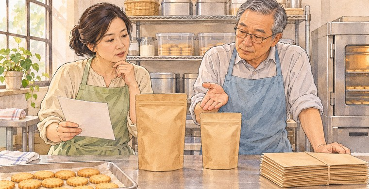

MKT-16 · 香港 · 10–15 分钟 · 产品线延伸 · 自家产品蚕食 · 增量贡献
推出新包装，就有新生意吗？

香港曾推出另一种包装容量
太古可口可乐的《2019 年可持续发展报告》记述投资生产线后，在香港推出迷你罐装饮品。这只说明企业可以增加包装容量选择，没有证据显示迷你罐取代了原有销售或令利润下跌。
本案的饼干制造商、成本、需求和产能均属原创虚构，并非太古可口可乐数据，也不比较营养成分。
课堂决策
一家虚构香港饼干制造商在规划一个月尚未承诺的零售产量。若不推出新品，预计售出 1,000 包标准装，每包 HK$30，完整变动成本每包 HK$18。扣除变动成本后，每包贡献 HK$12，固定成本维持不变。已接客户订单另有保障，已从可用产能中预留。
建议推出的小包装每包卖 HK$20，变动成本 HK$12，即贡献 HK$8。完整上市方案预计售出 400 小包，另需 HK$600 设计和推广开支，尚未支付，不推出便可避免。两款都符合品质和标签要求。小包的饼干较少，包数相同不代表重量相同。
初版电子表格把 400 × HK$8 再减 HK$600，加到原有贡献额，没核实小包顾客本来会买甚么，也没确认产能。经理可以按完整方案推出 400 包，或本月只维持标准装。尚未宣布或承诺，资金充足，也有时间复核预测。没有估入其他未来收益。
| 一个月的比较 | 标准装 | 小包装 |
|---|
| 每包售价 | HK$30 | HK$20 |
| 完整变动成本 | HK$18 | HK$12 |
| 每包贡献额 | HK$12 | HK$8 |
| 初步销量假设 | 不推出时售 1,000 包 | 建议推出 400 包 |
你的决定按初版电子表格，增量贡献是多少？你会据此批准上市吗？在把每包小包装的销售当作新生意之前，你需要查明哪些顾客来源和产能资料？
第 2 轮 · 补充资料
修订预测把 400 包小包装分成两部分：150 包各取代原本会买的一包标准装；另外 250 包才是新增购买，买家若没有小包装就不会买这家厂的任何产品。一换一是题设提供的预测，并非访谈证实的因果效果。未计产能限制，标准装需求降至 850 包。
生产部确认，在预留现有承诺、保养及安全工作安排后，还可封装 1,150 包。无论大小，每包均占一个名额；瓶颈在封口及检验，不在饼干重量。其他工序产能足够。完整方案会先供应 400 小包，只剩 750 个名额给标准装。余下 100 包标准装需求会在本月流失，不会延后供应，也不会变成更多小包装销售。
比较已备妥的两案：只供应标准装，或推出全部 400 小包，再用剩余产能做标准装。缩小规模、另选渠道、增加班次或外包，都需要新的成本方案和需求估算，题目并未提供。两案都不影响已接订单。新增的生产、销售和履约成本都已计入，没有漏掉额外的准备或存货成本。数字是有条件的规划估算，不是保证销量。
你的决定你会批准完整上市方案，还是维持只售标准装？把小包装的贡献、顾客转买造成的损失和产能挤占造成的损失分开计算，再指出重新设计前值得检验的一项假设。
包装新，不代表生意也新
初版电子表格预计增量贡献为 400 × HK$8 − HK$600 = HK$2,600，前提是标准装没有少卖，产能亦足够。只售标准装的贡献额为 1,000 × HK$12 = HK$12,000。
分清转买与新增购买
顾客转买，令标准装少了 150 × HK$12 = HK$1,800 贡献。若没有产能限制，两款合计的贡献额为 850 × HK$12 + 400 × HK$8 − HK$600 = HK$12,800，仍增加 HK$800。新品蚕食了部分旧品销售，令得益缩小，却未足以令无产能限制的上市方案不划算。
产能限制带来另一笔损失
需求合计需要 850 + 400 = 1,250 个名额，比 1,150 个多 100 个。先供应全部 400 小包，只能供应 750 包标准装。这 100 包是 150 包转买以外的损失；混为一谈就会漏掉第二个影响。
算清完整上市方案
750 × HK$12 + 400 × HK$8 − HK$600 = HK$11,600，比只售标准装少 HK$400。逐项看：小包装增加 HK$3,200；顾客转买扣 HK$1,800；产能挤占再扣 HK$1,200；最后扣上市成本 HK$600。这是扣除不变固定成本前的贡献额，不是公司总利润。
改方案并非零成本
按题设数字，以贡献额为目标，应维持本月只售标准装。日后可改变数量、定位或渠道，但不能假定维持同一成本就只吸引新买家。先验证小包买家原本会买什么，以及新增产量会挤走哪些产品。有些顾客转买，产品线延伸仍可有利可图；本月的比较不是永久禁止小包装。
教师提示
用三栏分开记录：新包装的购买量、因顾客转买被替代的旧品销量，以及因产能挤占而流失的旧品销量。请学生算出没有产能限制时增加 HK$800，以及计入限制后减少 HK$400。评估对象是完整上市方案，不是可自行最优化的数量。包数不是克数，也不是去重顾客人数。无需读外部资料，不必假设顾客终身价值或广告成效提升。本题不是下架某款销量低但与其他商品一起买的货品，而是加推一款会争夺购买量和有限产能的产品。
第二轮
修订预测把 400 包小包装分成两部分：150 包各取代原本会买的一包标准装；另外 250 包才是新增购买，买家若没有小包装就不会买这家厂的任何产品。一换一是题设提供的预测，并非访谈证实的因果效果。未计产能限制，标准装需求降至 850 包。
生产部确认，在预留现有承诺、保养及安全工作安排后，还可封装 1,150 包。无论大小，每包均占一个名额；瓶颈在封口及检验，不在饼干重量。其他工序产能足够。完整方案会先供应 400 小包，只剩 750 个名额给标准装。余下 100 包标准装需求会在本月流失，不会延后供应，也不会变成更多小包装销售。
比较已备妥的两案：只供应标准装，或推出全部 400 小包，再用剩余产能做标准装。缩小规模、另选渠道、增加班次或外包，都需要新的成本方案和需求估算，题目并未提供。两案都不影响已接订单。新增的生产、销售和履约成本都已计入，没有漏掉额外的准备或存货成本。数字是有条件的规划估算，不是保证销量。
你的决定你会批准完整上市方案，还是维持只售标准装？把小包装的贡献、顾客转买造成的损失和产能挤占造成的损失分开计算，再指出重新设计前值得检验的一项假设。